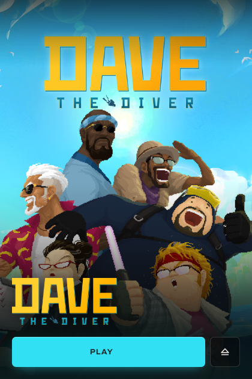
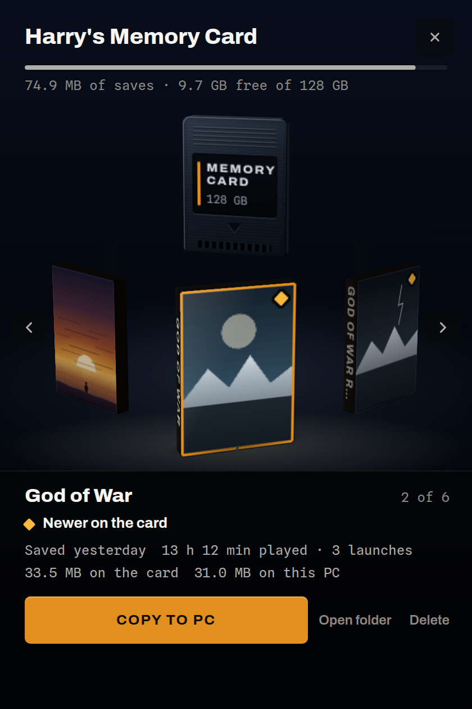
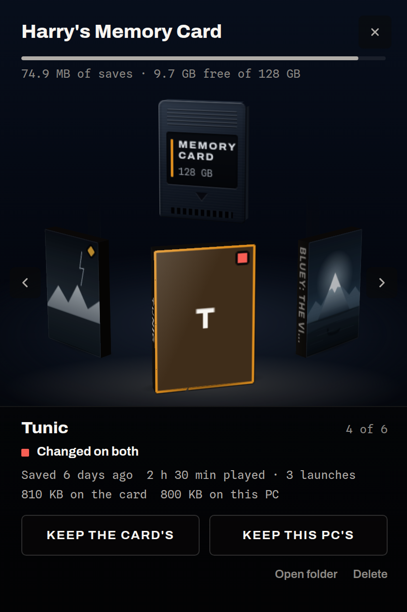
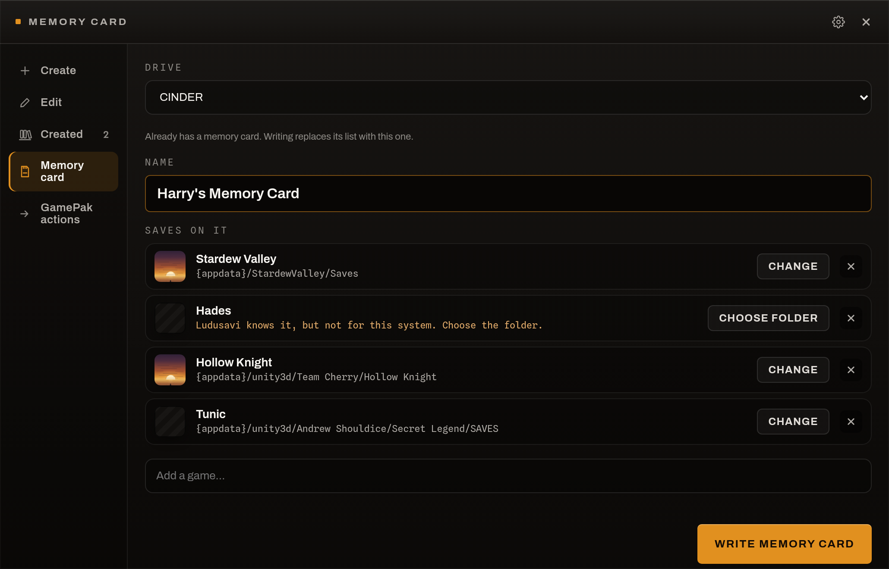
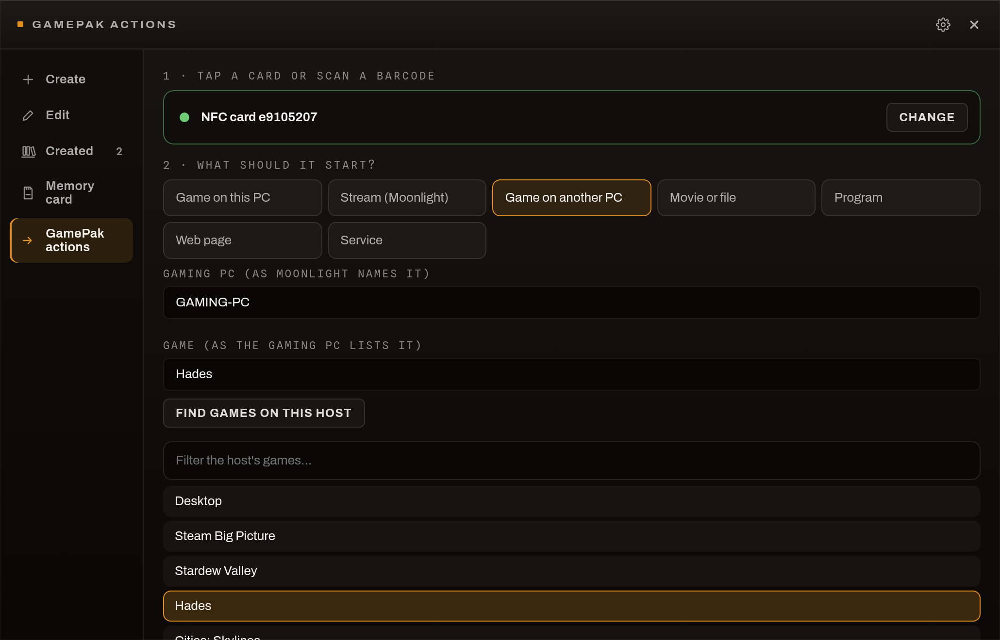
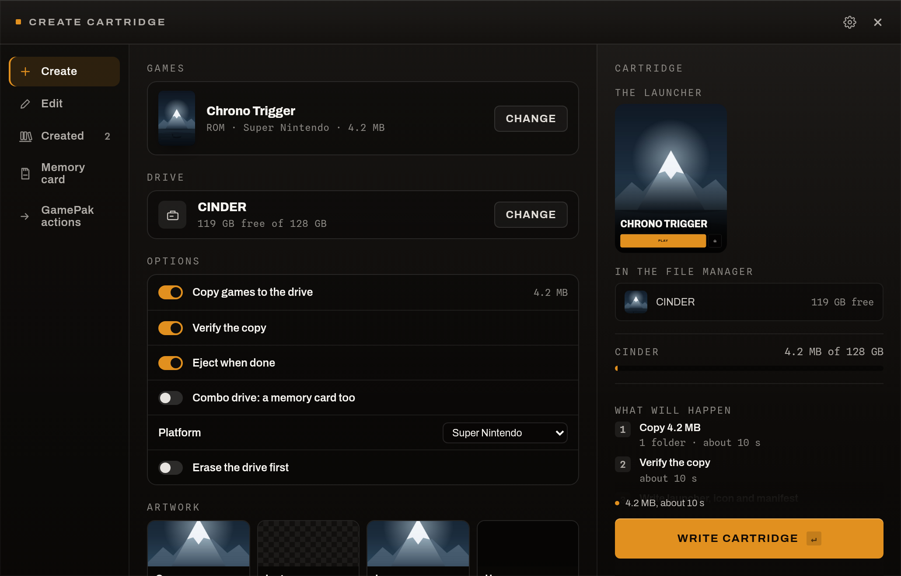

<!doctype html>
<html lang="en">
<head>
<meta charset="utf-8" />
<title>PC GamePak promos</title>
<!-- The source of docs/promo/*.jpg. Rendered by tools/screenshots.mjs:
     promo.html?t=<name> at 2x. The screenshots it frames are in docs/. -->
<style>
  @font-face { font-family: Archivo; src: url(../../tauri-ui/app/src/fonts/archivo-latin-var.woff2) format("woff2"); font-weight: 100 900; font-stretch: 62% 125%; }
  @font-face { font-family: "Spline Sans Mono"; src: url(../../tauri-ui/app/src/fonts/spline-sans-mono-latin.woff2) format("woff2"); }
  :root {
    --accent: oklch(0.72 0.15 68);
    --ground: oklch(0.115 0 0);
    --shell: oklch(0.155 0.005 65);
    --ink: oklch(0.97 0.006 75);
    --ink-2: oklch(0.75 0.008 75);
    --ink-3: oklch(0.635 0.008 75);
    --hairline: oklch(1 0 0 / 0.16);
  }
  * { box-sizing: border-box; margin: 0; }
  html, body { background: var(--ground); }
  body { font-family: Archivo, sans-serif; color: var(--ink); -webkit-font-smoothing: antialiased; }

  .card {
    position: relative; overflow: hidden;
    width: 1200px; height: 675px;
    background:
      radial-gradient(900px 520px at 85% 110%, oklch(0.72 0.15 68 / 0.16), transparent 70%),
      radial-gradient(700px 500px at -10% -20%, oklch(0.45 0.08 30 / 0.22), transparent 70%),
      var(--ground);
  }
  .card--social { width: 1280px; height: 640px; }
  /* Fine grain, so the gradients do not band. */
  .card::after {
    content: ""; position: absolute; inset: 0; pointer-events: none; opacity: 0.05;
    background-image: url("data:image/svg+xml,%3Csvg xmlns='http://www.w3.org/2000/svg' width='160' height='160'%3E%3Cfilter id='n'%3E%3CfeTurbulence baseFrequency='0.9' numOctaves='2'/%3E%3C/filter%3E%3Crect width='160' height='160' filter='url(%23n)'/%3E%3C/svg%3E");
  }

  .copy { position: absolute; left: 72px; top: 0; bottom: 0; width: 470px; display: flex; flex-direction: column; justify-content: center; }
  .brand { position: absolute; left: 72px; top: 52px; display: flex; align-items: center; gap: 12px; }
  .badge { width: 34px; height: 48px; background: url(../pc-gamepak-logo-hires.png) no-repeat; background-size: 98px 52.7px; background-position: 0 -2.3px; filter: drop-shadow(0 2px 6px rgb(0 0 0 / .5)); }
  .brand span { font-size: 13px; font-weight: 800; letter-spacing: 0.19em; text-transform: uppercase; color: var(--ink-2); }
  .eyebrow { display: flex; align-items: center; gap: 10px; font-size: 13px; font-weight: 700; letter-spacing: 0.19em; text-transform: uppercase; color: var(--accent); margin-bottom: 22px; }
  .eyebrow::before { content: ""; width: 8px; height: 8px; background: var(--accent); border-radius: 1px; }
  h1 { font-size: 60px; font-weight: 800; line-height: 0.98; letter-spacing: -0.02em; font-stretch: 105%; }
  .copy--wide-shot { width: 410px; }
  .copy--wide-shot h1 { font-size: 50px; }
  .copy--wide-shot .lede { font-size: 17px; }
  h1 em { font-style: normal; color: var(--accent); }
  .lede { margin-top: 24px; font-size: 19px; line-height: 1.45; color: var(--ink-2); max-width: 430px; }
  .points { margin-top: 28px; padding: 0; list-style: none; display: grid; gap: 11px; }
  .points li { font-family: "Spline Sans Mono", monospace; font-size: 14px; color: var(--ink-3); display: flex; gap: 12px; }
  .points li::before { content: "→"; color: var(--accent); }

  .shot { position: absolute; border-radius: 12px; overflow: hidden; border: 1px solid var(--hairline);
          box-shadow: 0 40px 80px -20px rgb(0 0 0 / .85), 0 0 0 1px rgb(0 0 0 / .6); background: var(--shell); }
  .shot img { display: block; width: 100%; height: 100%; object-fit: cover; object-position: top left; }
  .tag { position: absolute; font-family: "Spline Sans Mono", monospace; font-size: 12px; color: var(--ink-3); letter-spacing: 0.02em; }
</style>
</head>
<body>
<div id="root"></div>
<script>
const layouts = {
  // GitHub social preview: what it is, in one look.
  social: `
    <div class="card card--social">
      <div class="brand"><div class="badge"></div><span>PC GamePak</span></div>
      <div class="copy" style="width:520px">
        <p class="eyebrow">Windows · Linux · Steam Deck</p>
        <h1>Plug in a drive.<br/>Play the <em>game.</em></h1>
        <p class="lede">Removable drives as game cartridges: cover art on insert, saves and hours that travel with it.</p>
      </div>
      <div class="shot" style="left:690px;top:70px;width:300px;height:450px;transform:rotate(-3deg)"></div>
      <div class="shot" style="left:930px;top:120px;width:300px;height:450px;transform:rotate(2.5deg)"></div>
    </div>`,
  memcard: `
    <div class="card">
      <div class="brand"><div class="badge"></div><span>PC GamePak</span></div>
      <div class="copy">
        <p class="eyebrow">Memory card</p>
        <h1>Your saves,<br/>on a <em>card.</em></h1>
        <p class="lede">Plug it into any PC and it shows which saves are newer where. One button moves them, and the copy it replaces is kept.</p>
        <ul class="points">
          <li>Save folders found with Ludusavi</li>
          <li>Changed on both? You choose</li>
          <li>A cartridge can be one too</li>
        </ul>
      </div>
      <div class="shot" style="left:600px;top:58px;width:290px;height:435px;transform:rotate(-2.5deg)"></div>
      <div class="shot" style="left:860px;top:160px;width:290px;height:435px;transform:rotate(2deg)"></div>
    </div>`,
  "memcard-wizard": `
    <div class="card">
      <div class="brand"><div class="badge"></div><span>PC GamePak</span></div>
      <div class="copy copy--wide-shot">
        <p class="eyebrow">Memory card</p>
        <h1>Pick the games.<br/>We find the <em>saves.</em></h1>
        <p class="lede">Search your library, add a game, and its save folder is filled in from Ludusavi's list. Write it to any drive.</p>
      </div>
      <div class="shot" style="left:540px;top:150px;width:604px;height:387px"></div>
    </div>`,
  gamepaks: `
    <div class="card">
      <div class="brand"><div class="badge"></div><span>PC GamePak</span></div>
      <div class="copy copy--wide-shot">
        <p class="eyebrow">GamePak actions</p>
        <h1>Tap a card.<br/>The game is <em>ready.</em></h1>
        <p class="lede">Any NFC card or barcode can start a game, a stream or a movie. Games on another PC start before you press Play, through Moonlight.</p>
      </div>
      <div class="shot" style="left:540px;top:150px;width:604px;height:387px"></div>
    </div>`,
  emulated: `
    <div class="card">
      <div class="brand"><div class="badge"></div><span>PC GamePak</span></div>
      <div class="copy copy--wide-shot">
        <p class="eyebrow">Emulated cartridges</p>
        <h1>Retro games<br/>travel <em>too.</em></h1>
        <p class="lede">Choose a ROM and the system is read from it. The cartridge carries the files Pegasus and ES-DE read, so it shows up in either.</p>
      </div>
      <div class="shot" style="left:540px;top:150px;width:604px;height:387px"></div>
    </div>`,
};
document.getElementById("root").innerHTML = layouts[new URLSearchParams(location.search).get("t")] ?? "";
</script>
</body>
</html>
